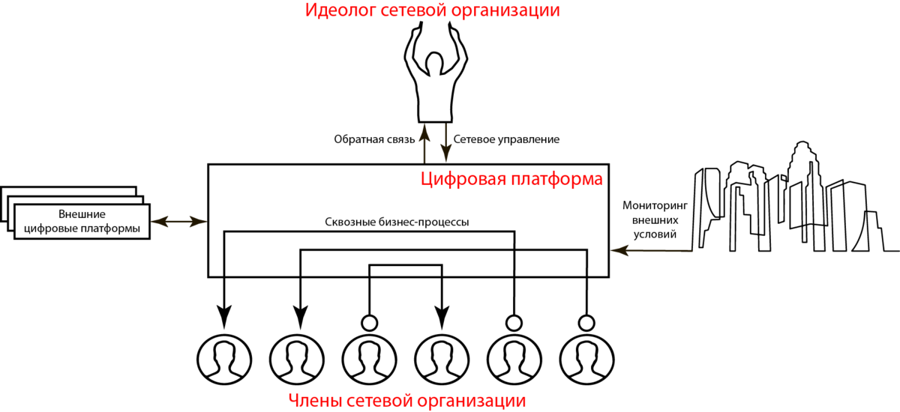

Юрий Грибанов, доктор экономических наук
После публикации статьи «Цифровой апокалипсис 2020. Что России делать дальше?» я получил немало писем с вопросами к той её части, которая была посвящена управлению. Кто-то просил раскрыть тему подробнее. Кто-то говорил о том, что управление, мол, штука вторичная, главное – макроэкономика. Кто-то посмеялся над упоминанием советской школы. Но особенно задело меня одно письмо, которое автор закончил словами: «стоит ли, Юрий, вообще говорить об управлении? Всеми нами управляют, мы не управляем ничем».
Пятьдесят лет назад замечательный психолог Мартин Селигман открыл феномен «выученной беспомощности», ставя эксперименты на собаках и пользуясь принципами и методологией профессора Павлова. Он обнаружил, что, убедившись в невозможности повлиять на ту или иную негативную ситуацию, животное отказывается от дальнейшего сопротивления и борьбы и начинает в буквальном смысле слова уповать на милосердие тех внешних сил, которые вызывают его мучения. В дальнейшем Селигман провел серию экспериментов уже с различными группами людей и получил полное подтверждение своих первоначальных выводов. Если убедить человека в том, что он бессилен перед навалившимися на него проблемами, этот человек действительно становится бессильным, неспособным к действию. «Выученная» или «вынужденная беспомощность» (как кто-то перефразировал термин Селигмана позднее) стала подлинной чумой нашего времени.
«А какое отношение все это имеет к управлению?», спросите вы. Отвечу – прямое. Все современные инструменты общественного управления эксплуатируют именно это свойство человеческой психики. Я уже писал в одной из предыдущих статей, что суть власти – это тоже управление. Объясняя людям, что они никак не способны влиять на события, происходящие вокруг них, истинные управленцы современности фактически выводят их из активной экономической жизни, отводя им роль винтиков и шестеренок в машине цифровой экономики. А что этому могут противопоставить «эффективные менеджеры», стоящие у руля нашей страны? Ничего! Для того, чтобы в этом убедиться, достаточно оглянуться по сторонам. Кроме слепого копирования чужого опыта никаких осмысленных действий власти вы не увидите. Импотенты от управления.
Выражение «цифровой концлагерь» принято трактовать в духе тотального контроля за каждым членом общества, нарушения прав личности и неприкосновенности частной жизни. Это, конечно, так, но это не самое главное. Основной принцип цифрового концлагеря (как и концлагеря физического) – привить заключенным рефлекс вынужденной беспомощности, отбить способность к любому самостоятельному действию, вышибить из их мозгов само понятие «управление».
Ты ничего не знаешь! Ты ничем не управляешь! Ты жертва обстоятельств! Ты делаешь то, что тебе говорят! Вот они, лозунги современной жизни, которые пусть и не звучат явно с телеэкранов и плакатов, но уже прочно сидят в мозгах большинства людей.
Я прихожу в ужас, слушая последние высказывания всевозможных либерастов по поводу того, что творится сегодня в мире. Впервые интересы здоровья людей поставлены выше экономики и политики! Впервые, сидя дома в одиночках, люди понимают, что могут спасти чьи-то жизни! Взаимопомощь в изоляции! Вы сами-то себя слышите?
Что же заставляет стольких людей, в том числе и очень неглупых, верить во всю эту чепуху? Верить в то, что весь этот кошмар, творящийся вокруг, единственный правильный и осознанный выход из ситуации? Правильно – синдром вынужденной беспомощности.
Вынужденная самоизоляция, которая преподносится нам как единственная эффективная мера против распространения коронавируса, помимо тяжелейших экономических проблем порождает не менее масштабные проблемы социального характера. Доказано, что иммунитет современного молодого человека, живущего в сети, в результате изоляции резко снижается. Речь идет как о физическом, так и о цифровом иммунитете. Наша молодежь становится все более восприимчивой к бактериям и вирусам, так же как и к любой чуши, которая сыплется на них из компьютера и телевизора. Поколение рожденных в 1995-2005 гг, надежда общества, становится слабым и оглупленным. Что это, как не диверсия всемирного масштаба? И почему никто не пытается с ней бороться?
В статье «Социальный рейтинг как инструмент построения общества социальной справедливости» я подробно остановился на тех инструментах управления человеком, которые используются в современном сетевом информационном обществе, превращая его в общество бездумного сверхпотребления и виртуальных ценностных суррогатов. Сегодня мне хотелось бы вспомнить об обратной, так сказать, светлой стороне сетевого общества, и поразмышлять о том, почему те преимущества, которые сетевая модель экономики потенциально может дать миру, остаются нераскрытыми. Однако, прежде, чем ответить на этот вопрос, предлагаю еще раз посмотреть на иерархическую и сетевую организации, на этот раз, с точки зрения управления.
Иерархической называется организация, которая может быть описана с помощью древовидной структуры и в которой нижние уровни строго подчинены верхним. Иерархические структуры – наиболее распространенный сегодня тип организаций. В простейшем случае на верхнем уровне иерархии находится руководитель (топ-менеджер), на уровне ниже – линейные руководители (например, руководители структурных подразделений), под ними – рядовой персонал. Топ-менеджер выполняет функцию субъекта управления, линейные руководители выступают в двух ролях, и как объекты, и как субъекты управления, исполнители являются исключительно объектами управления. В большинстве иерархических организаций работают карьерные лифты, позволяющие конкретным сотрудникам подниматься на более высокий уровень или (хотя на практике по понятным причинам такое случается редко) спускаться вниз.
С точки зрения управления иерархические структуры, с одной стороны, удобны и понятны, с другой – не лишены недостатков, главный из которых заключается в том, что при возникновении ошибки в передаче управления на средних уровнях, все более низкие уровни начинают работать неправильно.
Одна из причин этого явления, характерного для очень многих иерархических структур сформулирована в виде парадокса американским психологом Лоуренсом Питером: в иерархической системе каждый индивидуум имеет тенденцию подняться до уровня своей некомпетентности. Иными словами, чаще всего карьерный лифт довозит любого менеджера до того уровня, где он начинает быть некомпетентным, плохо справляясь со своими обязанностями. Разумеется, о дальнейшем повышении речи быть уже не может, но и спускаться обратно по своей воле тоже никто не хочет – ведь это потеря престижа и зарплаты. В результате имеем полный набор некомпетентностей на всех уровнях управления.
Принцип Питера неоднократно подвергался критике со стороны различных гуру от управления, но, согласитесь, с точки зрения здравого смысла он говорит об очень понятных вещах, которые мы действительно часто наблюдаем в жизни.
Можно ли избежать действия принципа Питера, создав более совершенную систему оценки профессиональных и личных качеств сотрудников? Этим вопросом озаботились в свое время математики из сицилийского университета Катании. Алессандро Плукино, Андреа Раписандра и Чезаре Гарофоло смоделировали организацию, подверженную действию принципа Питера и выяснили, что лучшая тактика руководителя – повышать людей случайным образом! За это открытие троица получила Шнобелевскую премию в области менеджмента в 2010 г.
Еще один психологический феномен, усиливающий действие принципа Питера, известен сегодня как эффект Даннинга-Крюгера, который может быть записан с следующей формулировке: некомпетентные люди совершают ошибки и промахи, не осознавая собственной некомпетентности. Разными словами эту мысль неоднократно высказывали философы, писатели и ученые еще с древнейших времен. Заслуга Джастина Крюгера и Дэвида Даннинга заключается в том, что они доказали существование феномена неосознанной некомпетентности экспериментально, проведя серию тестов вместе со своими студентами из Корнеллского университета. Помимо того, что эффект был назван их именами, они удостоились и другой награды – Шнобелевской премии в области психологии за 2000 год. Интересно, что основатель Ig Nobel Марк Абрахамс изначально придумал вручать этот приза за достижения, которые сначала заставляют смеяться, а затем – задуматься. Не случайно в мире есть несколько людей, получивших одновременно и Нобелевскую и Шнобелевскую премии.

Схема цифровой сетевой организации
Цифровизация с точки зрения эволюции управления позволяет сделать один очень важный шаг, а именно, перейти от иерархической модели к сетевой, передав значительную часть управляющих функций интеллектуальной цифровой платформе. Напомню, что сетевая организация – это объединение людей и/или организаций с их производственными ресурсами как самостоятельных и равноправных членов, взаимодействующих друг с другом в едином информационном поле для достижения целей, поставленных идеологом организации. Сетевая организация как хозяйствующий субъект имеет целый ряд сильных сторон, делающих ее гораздо более конкурентоспособной в современном мире, чем любая система, построенная по иерархическому принципу:
1. Минимизация рисков. Проблемы одного, отдельно взятого члена сетевой организации, не отражаются на ней в целом.
2. Минимизация управленческого персонала. Количество людей, не участвующих в цепочке создания ценности минимально. Алгоритмизация управления помогает свести человеческий фактор к минимуму. Стоимость управленческого продукта минимальна.
3. Адаптивность. Освоение новых территорий происходит за счет привлечения новых членов, которым не нужно долго вникать в локальные нюансы ведения бизнеса.
4. Лучшее управление знаниями. Благодаря непрерывному обмену опытом суммарная база знаний сети быстро растет.
5. Лучшая мотивация. Каждый член сетевой организации экономически самостоятелен. Его частные интересы никогда не входят в противоречие с интересами сети.
Казалось бы, все просто. Давайте воспользуемся всеми теми возможностями, которые дают на современные средства обмена информацией. Давайте кооперироваться и вместе работать над собственным и общественным благосостоянием. Для этого все уже есть! Но, нет, что-то мешает… Почему-то все идеи остаются на бумаге. Почему-то сетевое управление, о котором говорят и пишут уже много лет, так и не стало повседневной практикой и не привело ко всеобщему благополучию. Почему?
Ответ очень прост – это острый дефицит управленческих знаний. Один из моих читателей саркастически заметил в комментариях: «Главным ресурсом в цифровом обществе названы знания. Жрать вы, господа, знания будете?». Именно так. Не будет знаний, нечего будет жрать. Если в случае иерархической системы некомпетентность управленцев ведет лишь к снижению эффективности управления (принцип Питера), то в сетевой системе она делает невозможным функционирование организации в принципе.
В мире сетей управление любой социально-экономической системой, будь то компания малого бизнеса или целое государство, можно только в том случае, когда вы имеете четкое представление о внешних факторах, влияющих на нее. Без четкой картины внешнего мира, бизнесом сейчас заниматься вообще бессмысленно, а порой и опасно.
Рассмотрим простой пример. Глобальную сетевую организацию Amazon.com, принадлежащую Джефу Безосу, богатейшему, если верить Forbes, человеку планеты. Очень простая модель – выставляйте свои товары на нашей площадке, а уж покупатели найдутся сами. И выставляют, и находятся. Но с самыми успешными продавцами часто случается неприятная история. Видя, что товар продается слишком уж хорошо, Amazon выпускает собственный аналог, но чуть-чуть дешевле. И показы своего товара делает чуть-чуть более частыми, чем прежнего бестселлера. Проходит совсем немного времени, и успешный продавец оказывается в аутсайдерах – продажи падают, а глобального конкурента-монстра уже не победить. А все почему? Потому что компания Amazon.com видит картину в целом и знает о покупателях куда больше, чем любой участник ее торговой площадки (сети). Она одновременно и в цепочке создания ценности, и над ней. Знания конвертируются в деньги, а их недостаток ведет к экономическому краху. Реклама и маркетинг в традиционном понимании уходят в прошлое. Успешный производитель в современном мире не стреляет своим продуктом наугад, он не пытается продать вам то, что сделал по наитию, он знает, что вам нужно, прежде, чем выпускать продукт на рынок. Успешный бизнес стоит на фундаменте знаний.
И успешный бизнес это прекрасно понимает, а потому перекрыть доступ к знаниям для потенциальных конкурентов – основа его безопасности. А привитие синдрома вынужденной беспомощности – его стратегия.
Мы живем в состоянии войны глобального сетевого бизнеса против общества. Последнюю битву под флагом COVID-19 общество явно проиграло, и будет еще долго зализывать раны, если вообще сумеет оправиться от последствий. Означает ли это, что война в целом проиграна? Не знаю. Очевидно лишь то, что сейчас устанавливается новый мировой порядок, выжить в котором можно, только понимая устройство современных механизмов управления.
Когда в 2018 г. я создавал «Академию Цифровой Экономики», я предполагал, что у российского общества еще достаточно времени, чтобы создать армию современных управленцев, готовых ответить на вызовы глобальной цифровизации. Именно такой я видел нашу миссию. Оказалось, что это не так, и сегодня мир ведут бог знает куда по самому скоротечному негативному сценарию. Но, перефразируя классика, «жить в эту пору прекрасную» нам всем придется, так что будем рады поделиться знаниями о том, как построить цифровую компанию и как ей управлять. Главное помнить, что мы не беспомощны! Человек по-прежнему остается хозяином собственной судьбы, если он действительно этого хочет.
(С) Ю. И. Грибанов, 2020